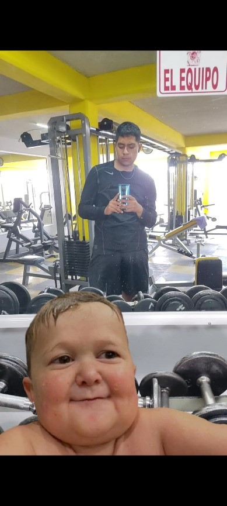
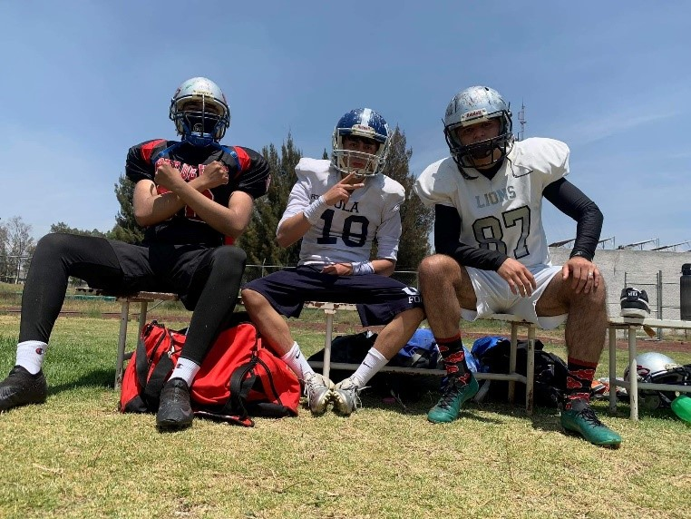
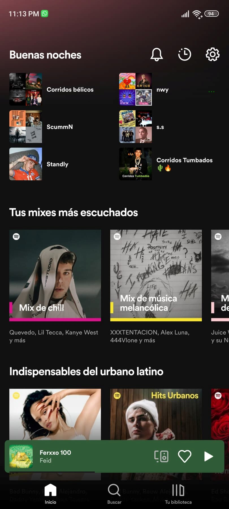
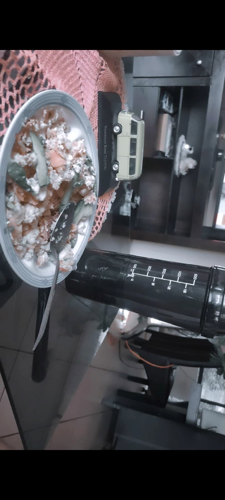

1. Ir al gimnasio: Es algo que me ha ayudado a lograr mis objetivos físicos.
2. Ir a entrenar americano: Como mencione, ingrese al equipo de la UTN, es una disciplina que te hace fuerte en cualquier aspecto, al igual que también me ayudo a poder aun mas conseguir mis cambios y agarrar condición física.
3. Escuchar música.
4. Aprender algo nuevo: Me gusta y tengo la iniciativa, pero soy una persona que se distrae con cualquier cosa, entonces, dejo de hacerlo por hacer lo que me interrumpió.
5. Preparar mis comidas: Igualmente como mencione, el hecho de comenzar a ir al gym, hizo que cambiara todo, y una de esas cosas fueron mis hábitos alimenticios.